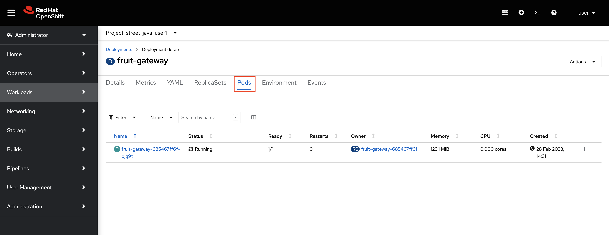
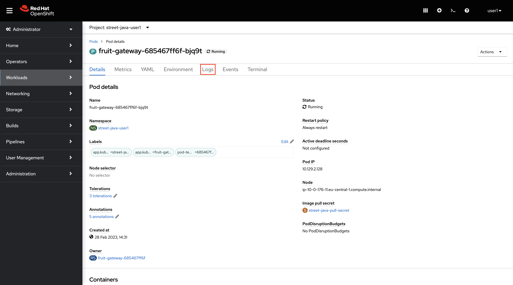
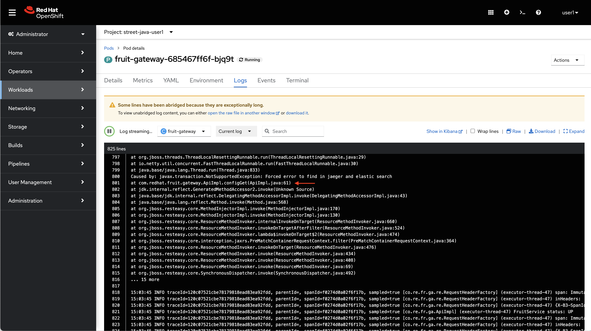

Finding the needle
We have installed OpenShift Logging, based on Fluentd, Elastic Search and Kibana. This provides you with the following benefits:
-
Centralized logs, all stdout from a container will be forwarded by fluentd to elastic search
-
RBAC based Kibana console will allow you to see the logs of cotainers running in namespaces you have been granted access to
The Needle
Maybe you have noticed some spurious error while running the UI of your application or running curl against the Street Java API… If you have… well now it’s time to fix that else… it’s time to prove this errors happen.
Please run this command:
for i in {1..20}; do curl -sI https://$(oc get route/fruit-gateway -o jsonpath='{.spec.host}')/api/config | grep HTTP; doneYou should get an output similar to this one:
HTTP/1.1 200 OK
HTTP/1.1 200 OK
HTTP/1.1 500 Internal Server Error
...
HTTP/1.1 200 OK
HTTP/1.1 200 OK
HTTP/1.1 500 Internal Server ErrorBut where is this error happening? How can I find out in an OpenShift cluster?
The Haystack
There are several ways to look for the trace of this error, the needle, in OpenShift, the haystack:
-
By using
oc logsfrom the command line to stream the logs from a pod -
By looking at the logs of a pod in the OpenShift web console
-
By using Kibana console
Using oc logs
Let’s start from the command line, please run this command:
oc logs deployments/fruit-gateway -n street-java-%USERNAME% | grep -B20 -e ".*ERROR.*c.*r.*fruit.*"15:03:44 ERROR traceId=973211f9c982264465cf427cfb37fccd, parentId=, spanId=3d65221ef35793b5, sampled=true [co.re.fr.ga.ApiImpl] (executor-thread-47) Forced error to find in jaeger and elastic search (1)
15:03:44 ERROR traceId=973211f9c982264465cf427cfb37fccd, parentId=, spanId=3d65221ef35793b5, sampled=true [io.qu.ve.ht.ru.QuarkusErrorHandler] (executor-thread-47) HTTP Request to /api/config failed, error id: ca2a1960-ba0c-42ed-8c51-37918deae143-11: org.jboss.resteasy.spi.UnhandledException: javax.transaction.NotSupportedException: Forced error to find in jaeger and elastic search
--
at io.netty.util.concurrent.FastThreadLocalRunnable.run(FastThreadLocalRunnable.java:30)
at java.base/java.lang.Thread.run(Thread.java:833)
Caused by: javax.transaction.NotSupportedException: Forced error to find in jaeger and elastic search
at com.redhat.fruit.gateway.ApiImpl.configGet(ApiImpl.java:61) (2)
at jdk.internal.reflect.GeneratedMethodAccessor2.invoke(Unknown Source)
at java.base/jdk.internal.reflect.DelegatingMethodAccessorImpl.invoke(DelegatingMethodAccessorImpl.java:43)
at java.base/java.lang.reflect.Method.invoke(Method.java:568)
at org.jboss.resteasy.core.MethodInjectorImpl.invoke(MethodInjectorImpl.java:170)
at org.jboss.resteasy.core.MethodInjectorImpl.invoke(MethodInjectorImpl.java:130)
at org.jboss.resteasy.core.ResourceMethodInvoker.internalInvokeOnTarget(ResourceMethodInvoker.java:660)
at org.jboss.resteasy.core.ResourceMethodInvoker.invokeOnTargetAfterFilter(ResourceMethodInvoker.java:524)
at org.jboss.resteasy.core.ResourceMethodInvoker.lambda$invokeOnTarget$2(ResourceMethodInvoker.java:474)
at org.jboss.resteasy.core.interception.jaxrs.PreMatchContainerRequestContext.filter(PreMatchContainerRequestContext.java:364)
at org.jboss.resteasy.core.ResourceMethodInvoker.invokeOnTarget(ResourceMethodInvoker.java:476)
at org.jboss.resteasy.core.ResourceMethodInvoker.invoke(ResourceMethodInvoker.java:434)
at org.jboss.resteasy.core.ResourceMethodInvoker.invoke(ResourceMethodInvoker.java:408)
at org.jboss.resteasy.core.ResourceMethodInvoker.invoke(ResourceMethodInvoker.java:69)
at org.jboss.resteasy.core.SynchronousDispatcher.invoke(SynchronousDispatcher.java:492)
... 15 more
15:03:45 ERROR traceId=069962cbd3021c66b239e96adc4a8cf7, parentId=, spanId=61c5d221d4091f50, sampled=true [co.re.fr.ga.ApiImpl] (executor-thread-47) Forced error to find in jaeger and elastic search
15:03:45 ERROR traceId=069962cbd3021c66b239e96adc4a8cf7, parentId=, spanId=61c5d221d4091f50, sampled=true [io.qu.ve.ht.ru.QuarkusErrorHandler] (executor-thread-47) HTTP Request to /api/config failed, error id: ca2a1960-ba0c-42ed-8c51-37918deae143-12: org.jboss.resteasy.spi.UnhandledException: javax.transaction.NotSupportedException: Forced error to find in jaeger and elastic search| 1 | You can see the line where the error happens |
| 2 | This trace belongs to a class from our service fruit-service |
Using OpenShift web console
Open the next link:
https://console-openshift-console.apps.%BASE_SUBDOMAIN%/k8s/ns/street-java-%USERNAME%/deployments/fruit-gateway/podsThen click on Pods:

Now on Logs:

Pay attention to the line pointed with the red arrow, the same we found before using oc logs.
